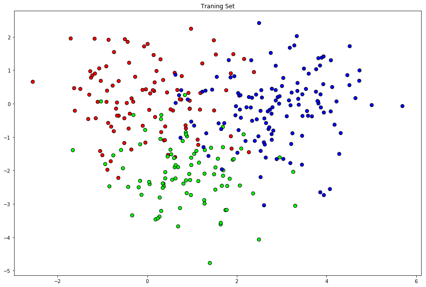
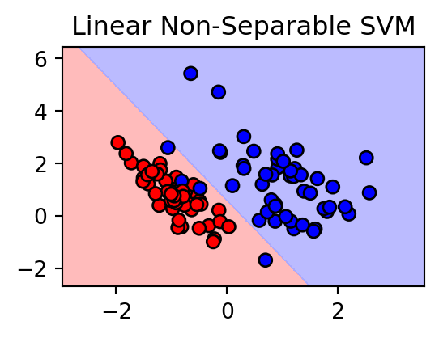
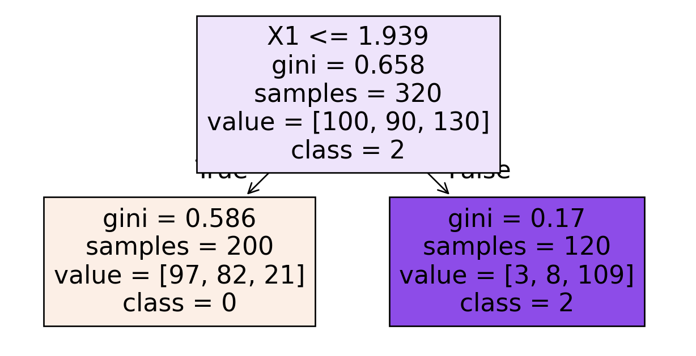
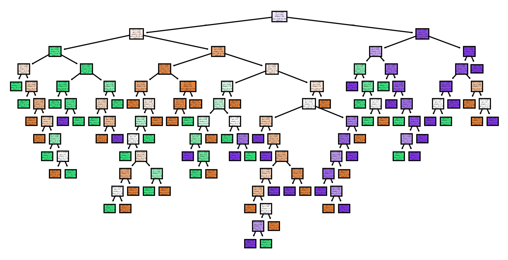

Cancer prediction: Predict cancer grade (from \(1\) to \(3\)).
\(X_i=(X_{i,1},\dots,X_{i,p})\) where \(X_{i,j}\) is the number of copies of chromosome segment \(j\) in ind. \(i\)
\(\mathcal{X} = \R^p\)
\(\mathcal{Y} = \{1,2,3\}\)
Classification
Example
Code
import numpy as npnp.random.seed(0)n = [100,90,130]Y = np.append(np.append(np.zeros(n[0]),np.ones(n[1])),2*np.ones(n[2]))X1 = np.random.multivariate_normal([0,0], [[1,0],[0,1]], n[0])X2 = np.random.multivariate_normal([1,-2], [[1,0],[0,1]], n[1])X3 = np.random.multivariate_normal([3,0],[[1,0],[0,1]], n[2])X = np.concatenate((X1,X2,X3))# Construction of the test samplen_test = [100,90,130]Y_test = np.append(np.append(np.zeros(n_test[0]),np.ones(n_test[1])),2*np.ones(n_test[2]))X1_test = np.random.multivariate_normal([0,0], [[1,0],[0,1]], n_test[0])X2_test = np.random.multivariate_normal([1,-2], [[1,0],[0,1]], n_test[1])X3_test = np.random.multivariate_normal([3,0],[[1,0],[0,1]], n_test[2])X_test = np.concatenate((X1_test,X2_test,X3_test))

Logistic Regression (Logit)
We consider a binary classifier: \(Y\in\{0,1\}\). The idea is that the target variable has the following conditional distribution \[Y_i|X_i=x_i\sim \text{Bernoulli}(p_i)\] where \[p_i:=P(Y_i=1|X_i=x_i)\] is assumed to have the following form: \[p_i(\beta)=\frac{\exp\big(\beta_0+\sum\limits_{j=1}^p \beta_j x_{i,j}\big)}{1+\exp\big(\beta_0+\sum\limits_{j=1}^p \beta_j x_{i,j}\big)}\]
Logistic Regression (Logit)
This is equivalent to \[\logit(p_i)=\beta_0+\sum\limits_{j=1}^p \beta_j x_{i,j}\] where \[\logit(p):=\log\Big(\frac{p}{1-p}\Big).\]
We estimate \(\beta\) by maximizing the (conditional) likelihood function \[\hat{\beta}=\arg\max\limits_{\beta\in\R^{p+1}}\mathcal{L}(\beta)=\arg\max\limits_{\beta\in\R^{p+1}}\prod\limits_{i=1}^n p_i(\beta)^{Y_i}(1-p_i(\beta))^{1-Y_i}.\]
Logistic Regression (Logit)
The prediction rule is obtained by maximizing the probability over the outcomes \[\hat{g}(x)=\begin{cases}1\quad p(\hat{\beta})>\frac{1}{2}\\
0\quad p(\hat{\beta})\le\frac{1}{2}\end{cases}\] where \[p(\hat{\beta})=\frac{\exp\big(\hat{\beta}_0+\sum\limits_{j=1}^p \hat{\beta}_j x_{j}\big)}{1+\exp\big(\hat{\beta}_0+\sum\limits_{j=1}^p \hat{\beta}_j x_{j}\big)}
\]
There are many more ML methods for classification, e.g.,
Nearest Neighbors Classification,
Decision Trees,
Random Forests,
Gradient Boosting,
SVMs
etc.
Nearest Neighbors Classification
The \(k\)-nearest neighbor classification is a prediction rule which weights the \(k\) nearest neighbors and performs the prediction due to a simple majority vote.
The distance of two points \(x=(x_1,\dots,x_p)\) and \(x'=(x'_1,\dots,x'_p)\) is measured with the euclidean distance \[d(x,x')=\|x-x'\|_2=\Big(\sum\limits_{j=1}^n(x_j-x'_j)^2\Big)^{1/2}.\] Given a sample \((Y_1,X_1),\dots,(Y_n,X_n)\) and a point \(x\) we can calculate the distance of each point to \(x\)\[d_i(x):=d(X_i,x).\]
Nearest Neighbors Classification
The set of indices of the \(k\)-nearest neighbors of a point \(x\) is defined as \[\mathcal{N}(x,k):=\{i:d_{i}(x)\le d_{[k]}(x)\}\] where \(d_{[k]}(x)\) is the order statistic of the distances.
This implies we are able to assign a probability to each of the outcomes \(y_{k'}\)\[p_{k'}^{(x)}:= \sum\limits_{i\in\mathcal{N}(x,k)} w_i 1_{\{y_{k'}=Y_i\}}.\]
Nearest Neighbors Classification
The prediction rule is obtained by maximizing the probability over the outcomes \[\hat{g}(x)=\arg\max\limits_{k'\in\{1,\dots,K\}}p_{k'}^{(x)}\]
Often the algorithm uses uniform weights \[w_i =\frac{1}{k}\quad i\in \mathcal{N}(x,k)\] or dependent on the distance \[w_i=\frac{d_i(x)^{-1}}{\sum\limits_{j\in\mathcal{N}(x,k)}d_j(x)^{-1}}.\]
If \(\beta_0+\beta_1x_1+\dots+ \beta_px_p<0\) then \(x\) lies on one side and if \(\beta_0+\beta_1x_1+\dots+ \beta_px_p>0\) then \(x\) lies the other side of the hyperplane
Support Vector Machines
Hyperplanes
Given a hyperplane \(\{x:f(x)=x\beta+\beta_0=0\}\) the classification rule is defined as \[
\hat{g}(x)=\text{sign}(f(x)).
\]
Separable and non-separable cases
Support Vector Machines
Separable case
For a given sample \((y_1,x_1),\dots,(y_n,x_n)\) one can find a a hyperplane defined by \(f(x)\) such that for all \(i\in\{1,\dots,n\}\) we have \[
y_if(x_i)>0.
\]
It is possible to find the “best” hyperplane defined by \(\hat{f}(x)=x\hat{\beta}+\hat{\beta}_0\) which separates the target variables on the sample
Optimization problem: Equivalent formulation \[
(\hat{\beta},\hat{\beta}_0)=\arg\min\limits_{\beta,\beta_0}\|\beta\|_2^2
\] with subject to \[
y_i(x_i\beta+\beta_0)\ge 1,\quad i=1,\dots,n.
\]
Support Vector Machines
Non-separable case
Basic idea: Still maximize the margin\(M\), but allow for some points to be on the wrong side of the hyperplane
Define slack variables \(\xi=(\xi_1,\dots,\xi_n)\) and modify the constraints \[
y_i(x_i\beta+\beta_0)\ge M(1-\xi_i),\quad i=1,\dots,n
\] with \(\xi_i\ge 0\)
Support Vector Machines
Non-separable case
Missclassification occurs, if \(\xi_i>1\)
\(\xi_i\) proportional amount by which the prediction \(f(x_i)\) is on the wrong side of the margin.

Solution: Soft-margin SVM classifier
Support Vector Machines
Non-separable case
Soft-margin SVM classifier \[
\hat{g}(x)=\text{sign}(x\hat{\beta}+\hat{\beta}_0)
\] where \[
(\hat{\beta},\hat{\beta}_0)=\arg\min\limits_{\beta,\beta_0}\|\beta\|_2^2+C\sum\limits_{i=1}^n\xi_i
\] with subject to \[
y_i(x_i\beta+\beta_0)\ge 1-\xi_i,\quad\xi_i\ge 0,\quad i=1,\dots,n.
\] The higher the tuning parameter \(C\) the more misclassified points and points inside the margin are penalized.
Support Vector Machines
Kernel Trick
Kernel trick: Implicitly map the input data into high-dimensional feature spaces
Effectively handle nonlinear relationships between features and not only rely on linear separation boundaries in the feature space
Basic idea: One can transform the features to fit a linear classifier \[
x=(x_1,\dots,x_p)\mapsto \varphi(x)=(\varphi_1(x),\dots,\varphi_m(x))
\]
Support Vector Machines
Kernel Trick
Solution: Classification rule can be written as loss function with penalization: \[
\hat{g}(x)=\text{sign}(x\hat{\beta}+\hat{\beta}_0)
\] where \[
(\hat{\beta},\hat{\beta}_0)=\arg\min\limits_{\beta,\beta_0}\sum\limits_{i=1}^n\underbrace{\big(1-y_i(x_i\beta+\beta_0)\big)_+}_{=L_{Hinge}\big(y_i(x_i\beta+\beta_0)\big)}+\frac{1}{C}\|\beta\|_2^2
\] with respect to \[
y_i(x_i\beta+\beta_0)\ge 1-\xi_i,\quad\xi_i\ge 0,\quad i=1,\dots,n.
\]
Support Vector Machines
Kernel Trick
One can show that in the optimization the features \(x_i\) only appear through their inner products \(\langle x_i,x_j\rangle\)
We just need to know the kernel functions \(k(x_i,x_j)=\langle \varphi(x_i),\varphi(x_j)\rangle\)
The idea is to partition the regressor space \(\mathcal{X}\) into rectangles, and then for each rectangle provide a predicted value.
Suppose we have \(n\) observations \((Y_i,X_i)\) for \(i=1,\dots,n\) with \(X_i = (X_{i,1},\dots,X_{i,p})\) and \(\mathcal{Y}=\{1,\dots,K\}\). Given a partition of \(\mathcal{X}\) into \(M\) rectangles, called nodes, \(R_1,\dots,R_M\) the decision tree is a prediction rule of the form \[\hat{g}(x) = \sum\limits_{m=1}^M\hat{Y}_{R_m}1_{\{x\in R_m\}}.\]
Decision Trees
The prediction rule on each rectangle is defined by \[\hat{Y}_{R_m} = \arg\max\limits_{y\in\mathcal{Y}}\frac{1}{n}\sum\limits_{i=1}^n 1_{\{X_i\in R_m\}}1_{\{Y_i= y\}}=\arg\max\limits_{y\in\mathcal{Y}}\frac{1}{n}\sum\limits_{i:X_i\in R_m}1_{\{Y_i= y\}} \]
How to determine the rectangles: We use recursive binary partitioning of the regressor space.
Divide the regressor space \(\mathcal{X}\) into two sub-regions by choosing a regressor and a split point that archive the best improvement of impurity.
For a given rectangle \(R_m\) let \(p^{(R_m)}=(p_1^{(R_m)},\dots,p_K^{(R_m)})\), where \(p_k^{(R_m)}\), \(k\in\{1,\dots,K\}\), is the fraction of target variables \(Y_i=k\) in the rectangle \(R_m\).
Decision Trees
We call \[I_{R_m}\big(p^{(R_m)}\big)=\sum\limits_{k=1}^K p_k^{(R_m)}\sum\limits_{l\neq k}^K p_l^{(R_m)}=1-\sum\limits_{k=1}^K \big(p_k^{(R_m)}\big)^2\] the Gini impurity of \(R_m\).
We choose the split point that minimizes the average impurity: \[\frac{1}{n}\sum\limits_{m=1}^M I_{R_m}\big(p^{(R_m)}\big)\]
from sklearn.tree import plot_treeimport matplotlib.pyplot as plt# Plot the decision treeplt.figure(figsize=(8, 4))plot_tree(model, filled=True, feature_names = ["X1", "X2"], class_names = ["0", "1", "2"])plt.show()

Decision Trees
Now we repeat this procedure for each sub-region and obtain four sub-regions. We continue this until the desired number of steps is reached or a minimal number of observations per rectangle, called minimal node size, is reached.
Given the final partition \(R_1,\dots ,R_M\) the prediction rule is equivalent to \[\hat{Y}_{R_m} =\arg\max\limits_{k\in\{1,\dots,K\}}p_k^{(R_m)}\] For each rectangle we predict the value with the highest fraction/probability.
from sklearn.tree import plot_treeimport matplotlib.pyplot as plt# Plot the decision treeplt.figure(figsize=(8, 4))plot_tree(model, filled=True, feature_names = ["X1", "X2"], class_names = ["0", "1", "2"])plt.show()

Random Forest Classifiers and Bagging
Even if we control the maximal depth or the node size, one single decision tree rarely gives satisfactory performance.
The idea of Random Forests is to grow many different deep trees and then aggregate the predictions of each tree to a new combined prediction.
The trees are grown over different bootstrap samples (quasi copies). Each tree is grown deep to keep the approximation error low and the averaging is meant to reduce the noisiness of individual trees.
Random Forest Classifiers and Bagging
Bagging:
Draw \(B\) bootstrap samples from \((Y_1,X_1)\dots,(Y_n,X_n)\).
For each bootstrap sample \(b\in\{1,\dots,B\}\) grow a deep decision tree and obtain a partition \(R_1^{(b)},\dots,R_{M_b}^{(b)}\) with fractions \[p^{(R_m^{(b)})}=\big(p_1^{(R_m^{(b)})},\dots,p_K^{(R_m^{(b)})}\big)\] for each rectangle.
For each \(x\in\mathcal{X}\) and bootstrap sample \(b\) we obtain probabilities for each outcome \(k\)\[p^{(b)}_k(x)=\sum\limits_{m=1}^{M_b}p_k^{(R_m^{(b)})}1_{\{x\in R_m^{(b)}\}}.\]
Random Forest Classifiers and Bagging
Bagging (continued):
Output the prediction rule: \[\hat{g}(x) = \arg\max\limits_{k\in\{1,\dots,K\}}\frac{1}{B}\sum\limits_{b=1}^B p^{(b)}_k(x)\]
Random Forest Classifiers and Bagging
From Bagging to Random Forests:
The key underlying idea is that the trees are grown deep to keep the approximation error low, and averaging is meant to reduce the noisyness of individual trees.
The procedure of averaging noisy prediction rules over the bootstrap samples is called Bootstrap Aggregation or Bagging.
There are many modifications and other tunig parameters of this method.
Random Forest Classifiers and Bagging
One very important modification is the use of additional randomization to “decorrelate” the trees: Instead of choosing the best split on all variables we just split on a random subset of the regressors \(\Rightarrow\)Random Forest